Started
Jan 1, 2024 08:49:33 pm
Ended
Jan 1, 2024 09:53:46 pm
Features Passed
7
Features Failed
19
Features
Scenarios
Steps
Timeline
System/Environment
| Name | Value |
|---|---|
| Engineer | Krupali |
| Project | Automation Exercise |
| os | Windows |
-
Register User
20:49:34 / 00:00:33:960 Fail
Register User
01.01.2024 20:49:34 01.01.2024 20:50:08 00:00:33:960 · #test-id=1FailRegister on the web pageGiven The user is on the home pageWhen The user clicks Signup Login menu buttonThen Verify New User Signup! is visibleWhen The user enters name "Krupali"When The user enters email "krupali@gmail.com"And The user clicks Signup buttonThen Verify that ENTER ACCOUNT INFORMATION is visibleWhen User selects MissWhen User Enters Password "Krupali123!"When User Selects Day "1"When User Selects Month "Jan"When User Selects Year "1995"Step skippedWhen User Enters First Name "Krupali"Step skippedWhen User Enters Last Name "Lalkia"Step skippedWhen User Enters Address "15 Covent Garden"Step skippedWhen User Enters Country "UK"Step skippedWhen User Enters State "London"Step skippedWhen User Enters City "London"Step skippedWhen User Enters Zipcode "SL0 8RA"Step skippedWhen User Enters Mobile "07894561230"Step skippedAnd The user clicks Create Account buttonStep skippedThen Verify that ACCOUNT CREATED! is visibleStep skippedWhen The user clicks Continue buttonStep skippedAnd The user clicks Dismiss buttonStep skippedThen Verify that Logged in as username is visibleStep skippedWhen The user clicks Delete Account buttonStep skippedThen Verify that ACCOUNT DELETED is visibleStep skippedAnd The user clicks Other Continue buttonStep skippedcases.test.automationexercise.steps.Hooks.tearDown(io.cucumber.java.Scenario)Register on the web page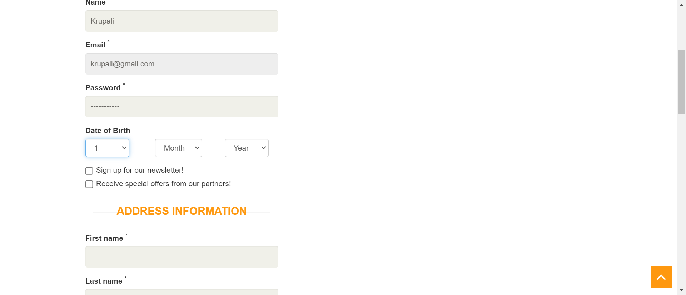 -
Login User with correct email and password
20:50:08 / 00:00:56:637 Fail
Login User with correct email and password
01.01.2024 20:50:08 01.01.2024 20:51:05 00:00:56:637 · #test-id=33FailLogin User with correct email and passwordGiven The user is on the home pageWhen The user clicks Signup Login menu buttonThen Verify New User Signup! is visibleWhen The user enters correct email address "krupali@gmail.com"When The user enters correct password "Krupali123!"And The user clicks login buttonThen Verify that Logged in as username is visibleWhen The user clicks Delete Account buttonThen Verify that ACCOUNT DELETED is visibleStep skippedAnd The user clicks Other Continue buttonStep skippedcases.test.automationexercise.steps.Hooks.tearDown(io.cucumber.java.Scenario)Login User with correct email and password
-
Login User with incorrect email and password
20:51:05 / 00:00:06:910 Pass
Login User with incorrect email and password
01.01.2024 20:51:05 01.01.2024 20:51:12 00:00:06:910 · #test-id=47PassLogin User with incorrect email and passwordGiven The user is on the home pageWhen The user clicks Signup Login menu buttonThen Verify New User Signup! is visibleWhen The user enters correct email address "krupali@gmail.com"When The user enters correct password "Krupali123!"And The user clicks login buttonThen Verify error Your email or password is incorrect is visible -
Logout User
20:51:12 / 00:00:56:168 Fail
Logout User
01.01.2024 20:51:12 01.01.2024 20:52:08 00:00:56:168 · #test-id=58FailLogout UserGiven The user is on the home pageWhen The user clicks Signup Login menu buttonThen Verify New User Signup! is visibleWhen The user enters correct email address "krupali@gmail.com"When The user enters correct password "Krupali123!"And The user clicks login buttonThen Verify that Logged in as username is visibleWhen The user clicks Logout buttonThen Verify New User Signup! is visibleStep skippedcases.test.automationexercise.steps.Hooks.tearDown(io.cucumber.java.Scenario)Logout User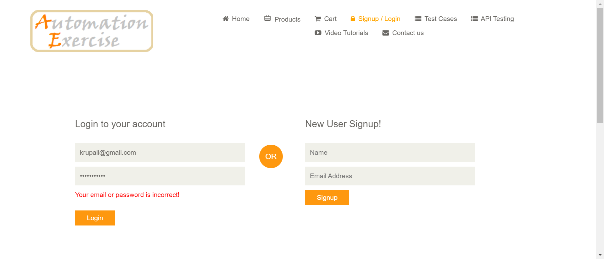 -
Register User with existing email
20:52:08 / 00:00:56:767 Fail
Register User with existing email
01.01.2024 20:52:08 01.01.2024 20:53:05 00:00:56:767 · #test-id=71FailRegister User with existing emailGiven The user is on the home pageWhen The user clicks Signup Login menu buttonThen Verify New User Signup! is visibleWhen The user enters existing name "Krupali"When The user enters existing email "krupali111@gmail.com"And The user clicks Signup buttonThen Verify error Email Address already exist is visiblecases.test.automationexercise.steps.Hooks.tearDown(io.cucumber.java.Scenario)Register User with existing email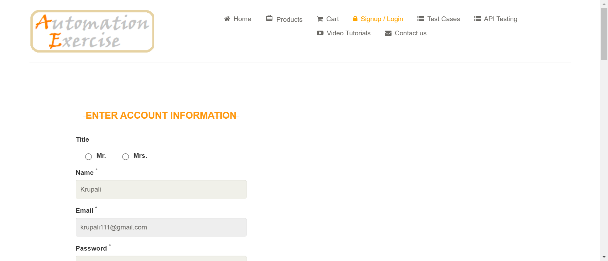 -
Contact Us Form
20:53:05 / 00:00:07:449 Fail
Contact Us Form
01.01.2024 20:53:05 01.01.2024 20:53:12 00:00:07:449 · #test-id=82FailContact Us FormGiven The user is on the home pageWhen The user clicks Contact us menu buttonThen Verify GET IN TOUCH is visibleWhen The user enters name "Krupali"When The user enters contact email "krupali@gmail.com"When The user enters subject "subject"When The user enters message "message"And The user uploads fileAnd The User clicks Submit buttonStep skippedAnd The user clicks OK buttonStep skippedThen Verify success message Success Your details have been submitted successfully is visibleStep skippedWhen The user clicks Home buttonStep skippedThen Verify that landed to home page successfullyStep skippedcases.test.automationexercise.steps.Hooks.tearDown(io.cucumber.java.Scenario)Contact Us Form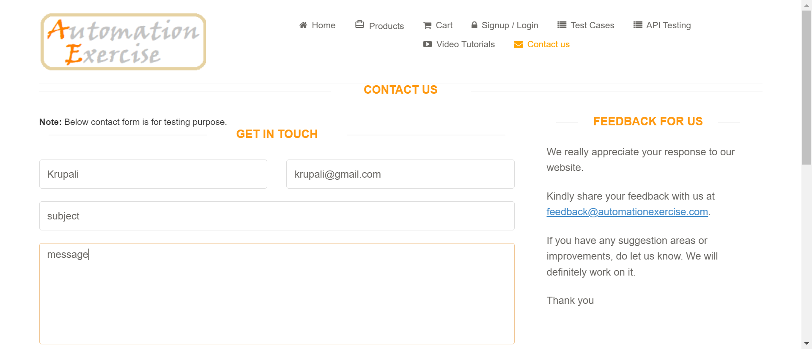 -
Verify Test Cases Page
20:53:12 / 00:00:54:686 Fail
Verify Test Cases Page
01.01.2024 20:53:12 01.01.2024 20:54:07 00:00:54:686 · #test-id=99FailVerify Test Cases PageGiven The user is on the home pageWhen The user clicks Test Cases menu buttonThen Verify user is navigated to test cases page successfullycases.test.automationexercise.steps.Hooks.tearDown(io.cucumber.java.Scenario)Verify Test Cases Page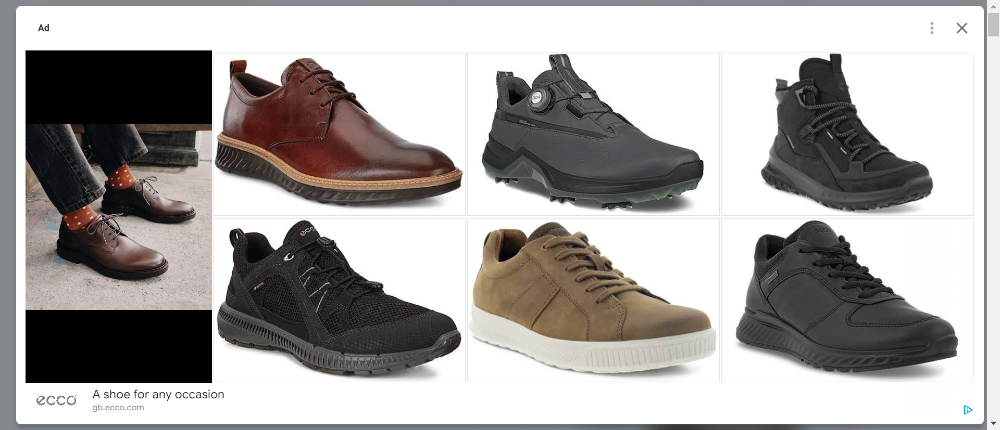 -
Verify All Products and product detail page
20:54:07 / 00:00:55:368 Fail
Verify All Products and product detail page
01.01.2024 20:54:07 01.01.2024 20:55:02 00:00:55:368 · #test-id=106FailVerify All Products and product detail pageGiven The user is on the home pageWhen The user clicks Products menu buttonThen Verify user is navigated to ALL PRODUCTS page successfullyAnd Verify the products list is visibleStep skippedWhen The user clicks on View Product of first productStep skippedThen Verify the user is landed to product detail pageStep skippedAnd Verify that detail detail is visible product nameStep skippedAnd Verify that detail detail is visible categoryStep skippedAnd Verify that detail detail is visible priceStep skippedAnd Verify that detail detail is visible availabilityStep skippedAnd Verify that detail detail is visible conditionStep skippedAnd Verify that detail detail is visible brandStep skippedcases.test.automationexercise.steps.Hooks.tearDown(io.cucumber.java.Scenario)Verify All Products and product detail page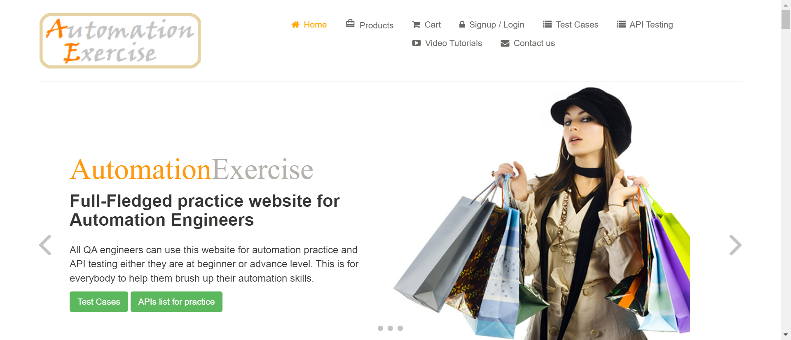 -
Search Product
20:55:02 / 00:00:55:332 Fail
Search Product
01.01.2024 20:55:02 01.01.2024 20:55:58 00:00:55:332 · #test-id=122FailSearch ProductGiven The user is on the home pageWhen The user clicks Products menu buttonThen Verify user is navigated to ALL PRODUCTS page successfullyWhen The user enters product name "Blue Top"Step skippedWhen The user clicks search buttonStep skippedThen Verify SEARCHED PRODUCTS is visibleStep skippedAnd Verify all the products related to search are visibleStep skippedcases.test.automationexercise.steps.Hooks.tearDown(io.cucumber.java.Scenario)Search Product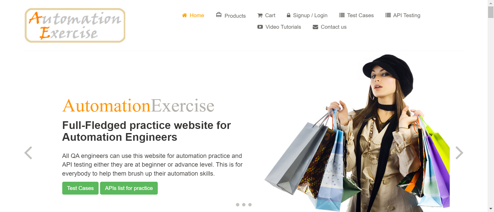 -
Verify Subscription in home page
20:55:58 / 00:00:05:446 Pass
Verify Subscription in home page
01.01.2024 20:55:58 01.01.2024 20:56:03 00:00:05:446 · #test-id=133PassVerify Subscription in home pageGiven The user is on the home pageWhen The user scrolls down to footerThen Verify text SUBSCRIPTIONWhen The user enters email address "krupali@gmail.com"When The user clicks Subscription submit buttonThen Verify success message You have been successfully subscribed is visible -
Verify Subscription in Cart page
20:56:03 / 00:00:30:034 Fail
Verify Subscription in Cart page
01.01.2024 20:56:03 01.01.2024 20:56:33 00:00:30:034 · #test-id=143FailVerify Subscription in Cart pageGiven The user is on the home pageWhen The user clicks Cart menu buttonAnd The user scrolls down to footerThen Verify text SUBSCRIPTIONStep skippedWhen The user enters email address "krupali@gmail.com"Step skippedWhen The user clicks Subscription submit buttonStep skippedThen Verify success message You have been successfully subscribed is visibleStep skippedcases.test.automationexercise.steps.Hooks.tearDown(io.cucumber.java.Scenario)Verify Subscription in Cart page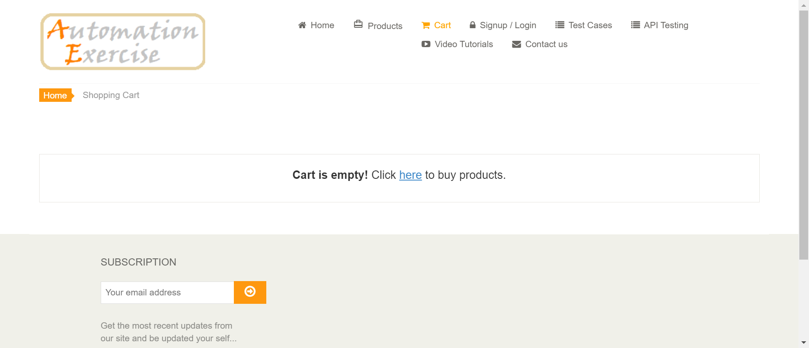 -
Add Products in Cart
20:56:33 / 00:00:07:618 Pass
Add Products in Cart
01.01.2024 20:56:33 01.01.2024 20:56:41 00:00:07:618 · #test-id=154PassAdd Products in CartGiven The user is on the home pageWhen The user clicks Products menu buttonAnd The user hovers over first product and clicks Add to cartAnd The user clicks Continue Shopping buttonAnd The user hovers over second product and clicks Add to cartAnd The user clicks View Cart buttonThen Verify both products are added to CartAnd Verify their pricesAnd Verify their quantityAnd Verify their total price -
Verify Product quantity in Cart
20:56:41 / 00:00:55:277 Fail
Verify Product quantity in Cart
01.01.2024 20:56:41 01.01.2024 20:57:36 00:00:55:277 · #test-id=168FailVerify Product quantity in CartGiven The user is on the home pageWhen The user clicks View Product for any product on home pageThen Verify product detail is openedWhen The user increases quantity to "4"Step skippedAnd The user clicks Add to cart buttonStep skippedAnd The user clicks View Cart buttonStep skippedThen Verify that product is displayed in cart page with exact quantityStep skippedcases.test.automationexercise.steps.Hooks.tearDown(io.cucumber.java.Scenario)Verify Product quantity in Cart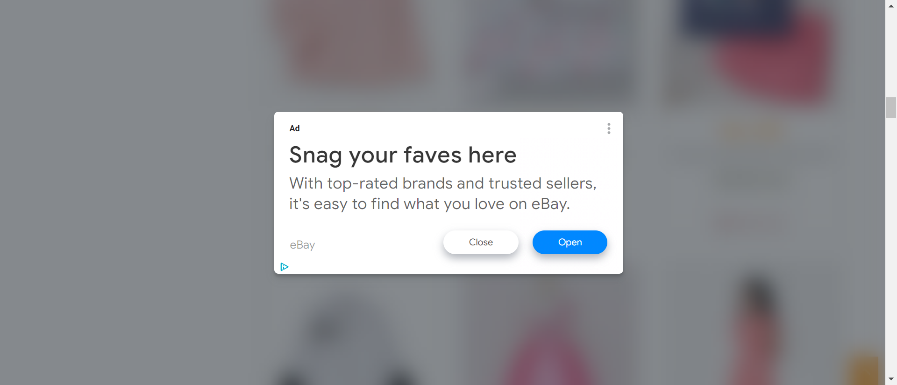 -
Place Order Register while Checkout
20:57:36 / 00:48:43:677 Fail
Place Order Register while Checkout
01.01.2024 20:57:36 01.01.2024 21:46:20 00:48:43:677 · #test-id=179FailRegister while CheckoutGiven The user is on the home pageWhen The user hovers over first product and clicks Add to cartAnd The user clicks Continue Shopping buttonAnd The user hovers over second product and clicks Add to cartStep skippedAnd The user clicks Continue Shopping buttonStep skippedAnd The user clicks Cart menu buttonStep skippedThen Verify that cart page is displayedStep skippedWhen The user clicks Proceed To Checkout buttonStep skippedAnd The user clicks Register-Login buttonStep skippedAnd The user enters name "Krupali"Step skippedAnd The user enters email "krupali@gmail.com"Step skippedAnd The user clicks Signup buttonStep skippedWhen User selects MissStep skippedWhen User Enters Password "Krupali123!"Step skippedWhen User Selects Day "1"Step skippedWhen User Selects Month "Jan"Step skippedWhen User Selects Year "1995"Step skippedWhen User Enters First Name "Krupali"Step skippedWhen User Enters Last Name "Lalkia"Step skippedWhen User Enters Address "15 Covent Garden"Step skippedWhen User Enters Country "UK"Step skippedWhen User Enters State "London"Step skippedWhen User Enters City "London"Step skippedWhen User Enters Zipcode "SL0 8RA"Step skippedWhen User Enters Mobile "07894561230"Step skippedAnd The user clicks Create Account buttonStep skippedThen Verify that ACCOUNT CREATED! is visibleStep skippedWhen The user clicks Continue buttonStep skippedAnd Verify that Logged in as username is visibleStep skippedWhen The user clicks Cart menu buttonStep skippedAnd The user clicks Proceed To Checkout buttonStep skippedThen Verify that the delivery address is same address filled at the time registration of accountStep skippedAnd Verify that the billing address is same address filled at the time registration of accountStep skippedWhen The user enters description in comment text area "thanks"Step skippedAnd Click Place Order buttonStep skippedAnd The user enters payment details Name on Card "Miss Krupali"Step skippedAnd The user enters payment details Card Number "1234567890123456"Step skippedAnd The user enters payment details CVC "555"Step skippedAnd The user enters payment details Expiration month "01"Step skippedAnd The user enters payment details Expiration year "2025"Step skippedWhen The user clicks Pay and Confirm Order buttonStep skippedThen Verify success message Your order has been placed successfully!Step skippedAnd The user clicks Delete Account buttonStep skippedThen Verify that ACCOUNT DELETED is visibleStep skippedAnd The user clicks Other Continue buttonStep skippedcases.test.automationexercise.steps.Hooks.tearDown(io.cucumber.java.Scenario) -
Place Order Register before Checkout
21:46:20 / 00:00:36:968 Fail
Place Order Register before Checkout
01.01.2024 21:46:20 01.01.2024 21:46:57 00:00:36:968 · #test-id=228FailRegister before CheckoutGiven The user is on the home pageWhen The user clicks Signup Login menu buttonAnd The user enters name "Krupali"And The user enters email "krupali@gmail.com"And The user clicks Signup buttonWhen User selects MissWhen User Enters Password "Krupali123!"When User Selects Day "1"When User Selects Month "Jan"When User Selects Year "1995"0Step skippedWhen User Enters First Name "Krupali"Step skippedWhen User Enters Last Name "Lalkia"Step skippedWhen User Enters Address "15 Covent Garden"Step skippedWhen User Enters Country "UK"Step skippedWhen User Enters State "London"Step skippedWhen User Enters City "London"Step skippedWhen User Enters Zipcode "SL0 8RA"Step skippedWhen User Enters Mobile "07894561230"Step skippedAnd The user clicks Create Account buttonStep skippedThen Verify that ACCOUNT CREATED! is visibleStep skippedWhen The user clicks Continue buttonStep skippedThen Verify that Logged in as username is visibleStep skippedWhen The user hovers over first product and clicks Add to cartStep skippedAnd The user clicks Continue Shopping buttonStep skippedAnd The user hovers over second product and clicks Add to cartStep skippedAnd The user clicks Continue Shopping buttonStep skippedAnd The user clicks Cart menu buttonStep skippedThen Verify that cart page is displayedStep skippedWhen The user clicks Proceed To Checkout buttonStep skippedThen Verify that the delivery address is same address filled at the time registration of accountStep skippedAnd Verify that the billing address is same address filled at the time registration of accountStep skippedWhen The user enters description in comment text area "thanks"Step skippedAnd Click Place Order buttonStep skippedAnd The user enters payment details Name on Card "Miss Krupali"Step skippedAnd The user enters payment details Card Number "1234567890123456"Step skippedAnd The user enters payment details CVC "555"Step skippedAnd The user enters payment details Expiration month "01"Step skippedAnd The user enters payment details Expiration year "2025"Step skippedWhen The user clicks Pay and Confirm Order buttonStep skippedWhen The user clicks Delete Account buttonStep skippedThen Verify that ACCOUNT DELETED is visibleStep skippedAnd The user clicks after delete Continue buttonStep skippedcases.test.automationexercise.steps.Hooks.tearDown(io.cucumber.java.Scenario)Register before Checkout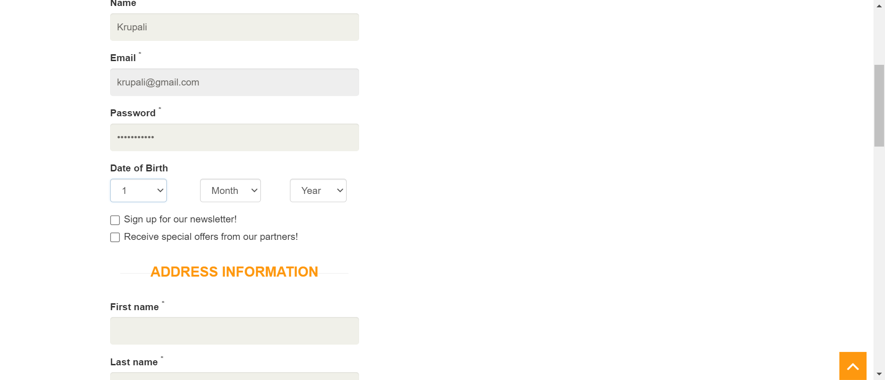 -
Place Order Login before Checkout
21:46:57 / 00:01:01:544 Fail
Place Order Login before Checkout
01.01.2024 21:46:57 01.01.2024 21:47:58 00:01:01:544 · #test-id=274FailLogin before CheckoutGiven The user is on the home pageWhen The user clicks Signup Login menu buttonAnd The user enters correct email address "krupali@gmail.com"And The user enters correct password "Krupali123!"And The user clicks login buttonThen Verify that Logged in as username is visibleWhen The user hovers over first product and clicks Add to cartAnd The user clicks Continue Shopping buttonStep skippedAnd The user hovers over second product and clicks Add to cartStep skippedAnd The user clicks Continue Shopping buttonStep skippedAnd The user clicks Cart menu buttonStep skippedThen Verify that cart page is displayedStep skippedWhen The user clicks Proceed To Checkout buttonStep skippedThen Verify that the delivery address is same address filled at the time registration of accountStep skippedAnd Verify that the billing address is same address filled at the time registration of accountStep skippedWhen The user enters description in comment text area "thanks"Step skippedAnd Click Place Order buttonStep skippedAnd The user enters payment details Name on Card "Miss Krupali"Step skippedAnd The user enters payment details Card Number "1234567890123456"Step skippedAnd The user enters payment details CVC "555"Step skippedAnd The user enters payment details Expiration month "01"Step skippedAnd The user enters payment details Expiration year "2025"Step skippedWhen The user clicks Pay and Confirm Order buttonStep skippedWhen The user clicks Delete Account buttonStep skippedThen Verify that ACCOUNT DELETED! is visibleStep skippedAnd The user clicks Continue buttonStep skippedcases.test.automationexercise.steps.Hooks.tearDown(io.cucumber.java.Scenario)Login before Checkout
-
Remove Products From Cart
21:47:58 / 00:00:10:449 Pass
Remove Products From Cart
01.01.2024 21:47:58 01.01.2024 21:48:09 00:00:10:449 · #test-id=304PassRemove Products From CartGiven The user is on the home pageWhen The user hovers over first product and clicks Add to cartAnd The user clicks Continue Shopping buttonAnd The user clicks Cart menu buttonThen Verify that cart page is displayedWhen The user clicks X button corresponding to particular productThen Verify that product is removed from the cart -
View Category Products
21:48:09 / 00:01:00:575 Fail
View Category Products
01.01.2024 21:48:09 01.01.2024 21:49:09 00:01:00:575 · #test-id=315FailView Category ProductsGiven The user is on the home pageThen Verify that categories are visible on left side barWhen The user clicks on Women categoryAnd The user clicks on Dress link under Women categoryThen Verify that category page is displayed and confirm text women Dress PRODUCTSWhen The user clicks on Men categoryStep skippedAnd The user clicks on Tshirts link under Men categoryStep skippedThen Verify that category page is displayed and confirm text men Tshirts PRODUCTSStep skippedcases.test.automationexercise.steps.Hooks.tearDown(io.cucumber.java.Scenario)View Category Products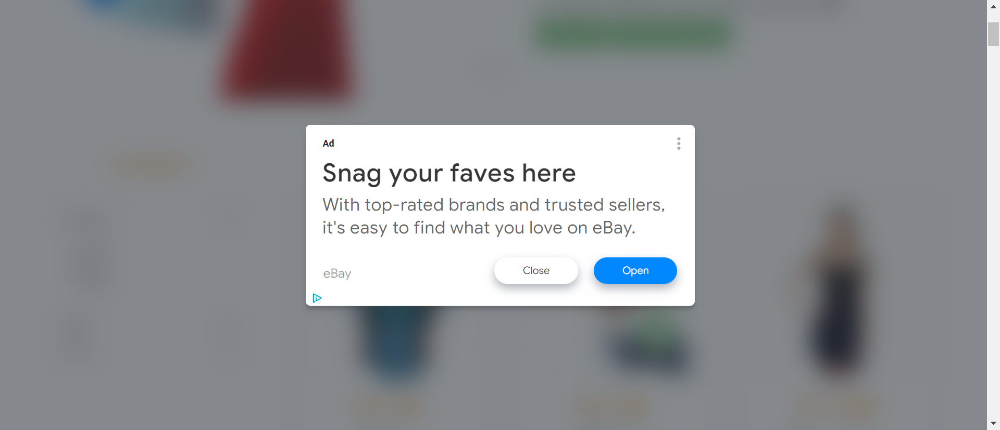 -
View Cart Brand Products
21:49:09 / 00:00:57:881 Fail
View Cart Brand Products
01.01.2024 21:49:09 01.01.2024 21:50:07 00:00:57:881 · #test-id=327FailView Cart Brand ProductsGiven The user is on the home pageWhen The user clicks Products menu buttonThen Verify that Brands are visible on left side barWhen The user clicks on left side bar Polo brand nameThen Verify that user is navigated to Polo page and brand products are displayedWhen The user clicks on left side bar H&M brand nameStep skippedThen Verify that user is navigated to H&M page and brand products are displayedStep skippedcases.test.automationexercise.steps.Hooks.tearDown(io.cucumber.java.Scenario)View Cart Brand Products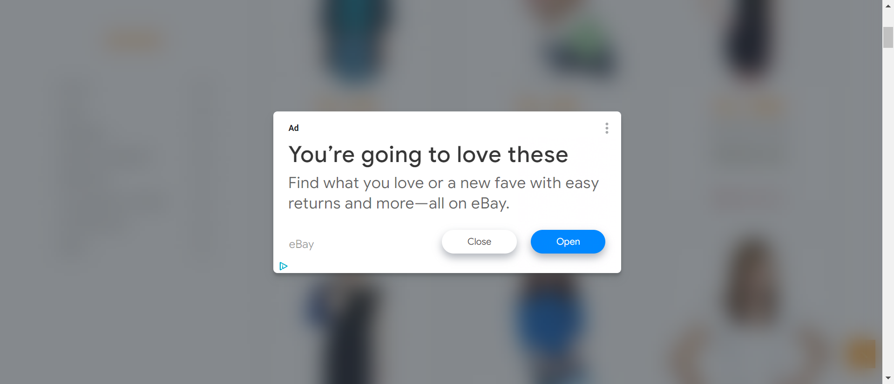 -
Search Products and Verify Cart After Login
21:50:07 / 00:00:57:177 Fail
Search Products and Verify Cart After Login
01.01.2024 21:50:07 01.01.2024 21:51:04 00:00:57:177 · #test-id=338FailSearch Products and Verify Cart After LoginGiven The user is on the home pageWhen The user clicks Products menu buttonThen Verify user is navigated to ALL PRODUCTS page successfullyWhen The user enters product name "Blue Top"Step skippedWhen The user clicks search buttonStep skippedThen Verify SEARCHED PRODUCTS is visibleStep skippedAnd Verify all the products related to search are visibleStep skippedWhen The user hovers over first product and clicks Add to cartStep skippedAnd The user clicks Continue Shopping buttonStep skippedAnd The user clicks Cart menu buttonStep skippedThen Verify that products are visible in cartStep skippedWhen The user clicks Signup Login menu buttonStep skippedWhen The user enters correct email address "avinashp22@gmail.com"Step skippedWhen The user enters correct password "Prime12345!"Step skippedAnd The user clicks login buttonStep skippedAnd The user clicks Cart menu buttonStep skippedThen Verify that those products are visible in cart after login as wellStep skippedcases.test.automationexercise.steps.Hooks.tearDown(io.cucumber.java.Scenario)Search Products and Verify Cart After Login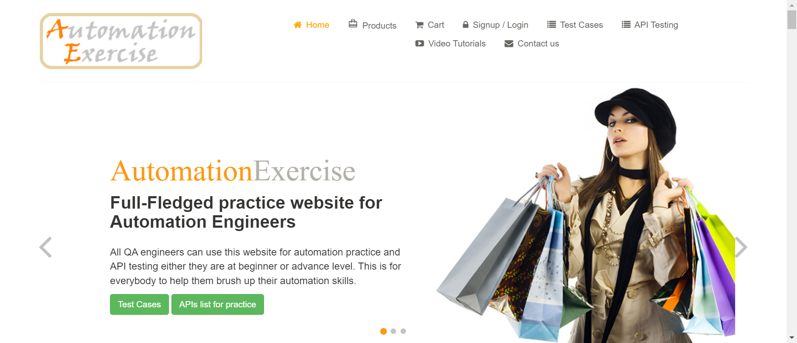 -
Add review on product
21:51:04 / 00:00:55:953 Fail
Add review on product
01.01.2024 21:51:04 01.01.2024 21:52:00 00:00:55:953 · #test-id=359FailAdd review on productGiven The user is on the home pageWhen The user clicks Products menu buttonThen Verify user is navigated to ALL PRODUCTS page successfullyWhen The user clicks View Product for any product on home pageStep skippedThen Verify Write Your Review is visibleStep skippedAnd The user fills in name "Krupali"Step skippedAnd The user fills in email "krupali@gmail.com"Step skippedAnd The user fills in review "test"Step skippedAnd The click Submit ButtonStep skippedThen Verify success message Thank you for your reviewStep skippedcases.test.automationexercise.steps.Hooks.tearDown(io.cucumber.java.Scenario)Add review on product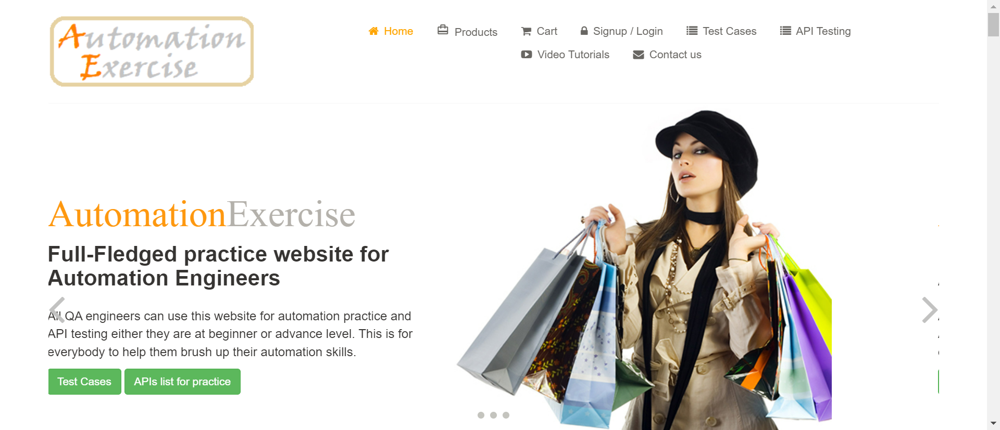 -
Add to cart from Recommended items
21:52:00 / 00:00:10:724 Pass
Add to cart from Recommended items
01.01.2024 21:52:00 01.01.2024 21:52:11 00:00:10:724 · #test-id=373PassAdd to cart from Recommended itemsGiven The user is on the home pageWhen The user scrolls down to footerThen Verify RECOMMENDED ITEMS are visibleWhen The user clicks on Add To Cart on Recommended productAnd The user clicks View Cart buttonThen Verify that recommended product is displayed in cart page -
Verify address details in checkout page
21:52:11 / 00:00:37:175 Fail
Verify address details in checkout page
01.01.2024 21:52:11 01.01.2024 21:52:48 00:00:37:175 · #test-id=383FailVerify address details in checkout pageGiven The user is on the home pageWhen The user clicks Signup Login menu buttonAnd The user enters name "Krupali"And The user enters email "krupali@gmail.com"And The user clicks Signup buttonWhen User selects MissWhen User Enters Password "Krupali123!"When User Selects Day "1"When User Selects Month "Jan"When User Selects Year "1995"Step skippedWhen User Enters First Name "Krupali"Step skippedWhen User Enters Last Name "Lalkia"Step skippedWhen User Enters Address "15 Covent Garden"Step skippedWhen User Enters Country "UK"Step skippedWhen User Enters State "London"Step skippedWhen User Enters City "London"Step skippedWhen User Enters Zipcode "SL0 8RA"Step skippedWhen User Enters Mobile "07894561230"Step skippedAnd The user clicks Create Account buttonStep skippedThen Verify that ACCOUNT CREATED! is visibleStep skippedWhen The user clicks Continue buttonStep skippedThen Verify that Logged in as username is visibleStep skippedWhen The user hovers over first product and clicks Add to cartStep skippedAnd The user clicks Continue Shopping buttonStep skippedAnd The user hovers over second product and clicks Add to cartStep skippedAnd The user clicks Continue Shopping buttonStep skippedAnd The user clicks Cart menu buttonStep skippedThen Verify that cart page is displayedStep skippedWhen The user clicks Proceed To Checkout buttonStep skippedThen Verify that the delivery address is same address filled at the time registration of accountStep skippedAnd Verify that the billing address is same address filled at the time registration of accountStep skippedWhen The user clicks Delete Account buttonStep skippedThen Verify that ACCOUNT DELETED is visibleStep skippedAnd The user clicks Other Continue buttonStep skippedcases.test.automationexercise.steps.Hooks.tearDown(io.cucumber.java.Scenario)Verify address details in checkout page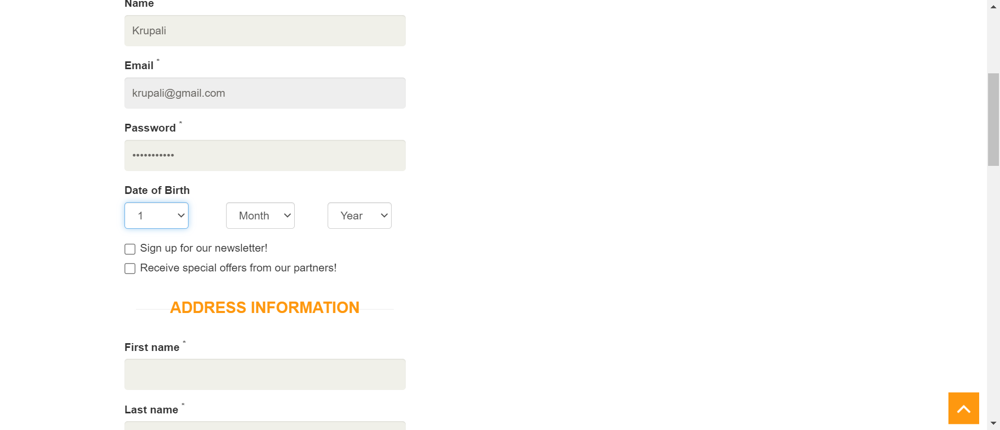 -
Download Invoice after purchase order
21:52:48 / 00:00:39:619 Fail
Download Invoice after purchase order
01.01.2024 21:52:48 01.01.2024 21:53:28 00:00:39:619 · #test-id=421FailDownload Invoice after purchase orderGiven The user is on the home pageWhen The user hovers over first product and clicks Add to cartAnd The user clicks Continue Shopping buttonAnd The user hovers over second product and clicks Add to cartAnd The user clicks Continue Shopping buttonAnd The user clicks Cart menu buttonThen Verify that cart page is displayedWhen The user clicks Proceed To Checkout buttonAnd The user clicks Register-Login buttonAnd The user enters name "Krupali"And The user enters email "krupali@gmail.com"And The user clicks Signup buttonWhen User selects MissWhen User Enters Password "Krupai123!"When User Selects Day "1"When User Selects Month "Jan"When User Selects Year "1995"Step skippedWhen User Enters First Name "Krupali"Step skippedWhen User Enters Last Name "Lalkia"Step skippedWhen User Enters Address "15 Covent Garden"Step skippedWhen User Enters Country "UK"Step skippedWhen User Enters State "London"Step skippedWhen User Enters City "London"Step skippedWhen User Enters Zipcode "SL0 8RA"Step skippedWhen User Enters Mobile "07894561230"Step skippedAnd The user clicks Create Account buttonStep skippedThen Verify that ACCOUNT CREATED! is visibleStep skippedWhen The user clicks Continue buttonStep skippedAnd Verify that Logged in as username is visibleStep skippedWhen The user clicks Cart menu buttonStep skippedAnd The user clicks Proceed To Checkout buttonStep skippedThen Verify that the delivery address is same address filled at the time registration of accountStep skippedAnd Verify that the billing address is same address filled at the time registration of accountStep skippedWhen The user enters description in comment text area "thanks"Step skippedAnd Click Place Order buttonStep skippedAnd The user enters payment details Name on Card "Miss Krupali"Step skippedAnd The user enters payment details Card Number "1234567890123456"Step skippedAnd The user enters payment details CVC "555"Step skippedAnd The user enters payment details Expiration month "01"Step skippedAnd The user enters payment details Expiration year "2025"Step skippedWhen The user clicks Pay and Confirm Order buttonStep skippedWhen The user clicks Download Invoice buttonStep skippedAnd Verify invoice is downloaded successfullyStep skippedAnd The user clicks Continue buttonStep skippedAnd The user clicks Delete Account buttonStep skippedThen Verify that ACCOUNT DELETED is visibleStep skippedAnd The user clicks Other Continue buttonStep skippedcases.test.automationexercise.steps.Hooks.tearDown(io.cucumber.java.Scenario)Download Invoice after purchase order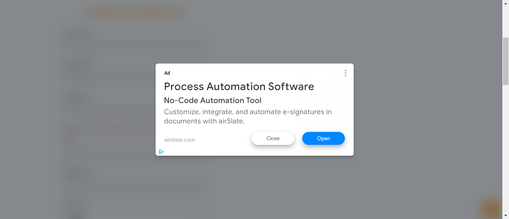 -
Verify Scroll Up using Arrow button and Scroll Down functionality
21:53:28 / 00:00:09:466 Pass
Verify Scroll Up using Arrow button and Scroll Down functionality
01.01.2024 21:53:28 01.01.2024 21:53:37 00:00:09:466 · #test-id=472PassVerify Scroll Up using Arrow button and Scroll Down functionalityGiven The user is on the home pageWhen The user scrolls down to footerThen Verify text SUBSCRIPTIONWhen The user clicks orange arrow buttonThen Verify that page is scrolled up and Full-Fledged practice website for Automation Engineers text is visible on screen -
Verify Scroll Up without Arrow button and Scroll Down functionality
21:53:37 / 00:00:07:985 Pass
Verify Scroll Up without Arrow button and Scroll Down functionality
01.01.2024 21:53:37 01.01.2024 21:53:45 00:00:07:985 · #test-id=481PassVerify Scroll Up without Arrow button and Scroll Down functionalityGiven The user is on the home pageWhen The user scrolls down to footerThen Verify text SUBSCRIPTIONWhen The user scrolls up to topThen Verify that page is scrolled up and Full-Fledged practice website for Automation Engineers text is visible on screen
-
org.openqa.selenium.NoSuchElementException
16 tests
org.openqa.selenium.NoSuchElementException
16 failedStatus Timestamp TestName Fail 20:49:43 pm When User Selects Month "Jan" Register User.Register on the web page.When User Selects Month "Jan"Fail 20:50:14 pm When The user clicks Delete Account button Login User with correct email and password.Login User with correct email and password.When The user clicks Delete Account buttonFail 20:51:17 pm When The user clicks Logout button Logout User.Logout User.When The user clicks Logout buttonFail 20:52:14 pm Then Verify error Email Address already exist is visible Register User with existing email.Register User with existing email.Then Verify error Email Address already exist is visibleFail 20:53:16 pm Then Verify user is navigated to test cases page successfully Verify Test Cases Page.Verify Test Cases Page.Then Verify user is navigated to test cases page successfullyFail 20:54:12 pm Then Verify user is navigated to ALL PRODUCTS page successfully Verify All Products and product detail page.Verify All Products and product detail page.Then Verify user is navigated to ALL PRODUCTS page successfullyFail 20:55:07 pm Then Verify user is navigated to ALL PRODUCTS page successfully Search Product.Search Product.Then Verify user is navigated to ALL PRODUCTS page successfullyFail 20:56:08 pm And The user scrolls down to footer Verify Subscription in Cart page.Verify Subscription in Cart page.And The user scrolls down to footerFail 20:56:45 pm Then Verify product detail is opened Verify Product quantity in Cart.Verify Product quantity in Cart.Then Verify product detail is openedFail 21:46:30 pm When User Selects Month "Jan" Place Order Register before Checkout.Register before Checkout.When User Selects Month "Jan"Fail 21:48:18 pm Then Verify that category page is displayed and confirm text women Dress PRODUCTS View Category Products.View Category Products.Then Verify that category page is displayed and confirm text women Dress PRODUCTSFail 21:49:16 pm Then Verify that user is navigated to Polo page and brand products are displayed View Cart Brand Products.View Cart Brand Products.Then Verify that user is navigated to Polo page and brand products are displayedFail 21:50:14 pm Then Verify user is navigated to ALL PRODUCTS page successfully Search Products and Verify Cart After Login.Search Products and Verify Cart After Login.Then Verify user is navigated to ALL PRODUCTS page successfullyFail 21:51:10 pm Then Verify user is navigated to ALL PRODUCTS page successfully Add review on product.Add review on product.Then Verify user is navigated to ALL PRODUCTS page successfullyFail 21:52:23 pm When User Selects Month "Jan" Verify address details in checkout page.Verify address details in checkout page.When User Selects Month "Jan"Fail 21:53:02 pm When User Selects Month "Jan" Download Invoice after purchase order.Download Invoice after purchase order.When User Selects Month "Jan" -
org.openqa.selenium.InvalidArgumentException
1 tests
org.openqa.selenium.InvalidArgumentException
1 failedStatus Timestamp TestName Fail 20:53:12 pm And The user uploads file Contact Us Form.Contact Us Form.And The user uploads file -
org.openqa.selenium.WebDriverException
2 tests
org.openqa.selenium.WebDriverException
2 failedStatus Timestamp TestName Fail 20:57:41 pm And The user clicks Continue Shopping button Place Order Register while Checkout.Register while Checkout.And The user clicks Continue Shopping buttonFail 20:57:43 pm cases.test.automationexercise.steps.Hooks.tearDown(io.cucumber.java.Scenario) Place Order Register while Checkout.Register while Checkout.cases.test.automationexercise.steps.Hooks.tearDown(io.cucumber.java.Scenario) -
org.openqa.selenium.json.JsonException
1 tests
org.openqa.selenium.json.JsonException
1 failedStatus Timestamp TestName Fail 21:47:08 pm When The user hovers over first product and clicks Add to cart Place Order Login before Checkout.Login before Checkout.When The user hovers over first product and clicks Add to cart